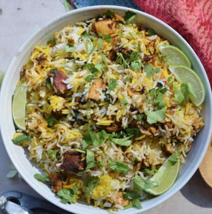
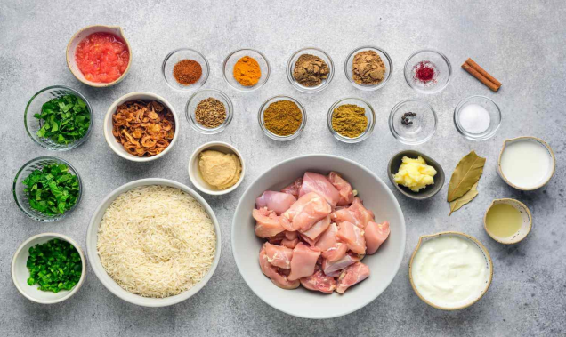

2/3 cup plain yogurt
1/2 cup water
1 Tbsp. vegetable oil
6 garlic cloves, minced
1/2 inch knob ginger, grated
1/8 tsp. ground turmeric
1/4 tsp. cinnamon
1/4 tsp. cayenne pepper, optional (if you don’t like it spicy, skip this spice)
1/2 tsp. ground cardamom
2 tsp. garam masala
2 tsp. coriander, chopped
1 Tbsp. ground cumin
2 Tbsp. paprika
1 1/2 tsp. salt
1.5 lbs. boneless and skinless chicken thighs, diced. 1 Tbsp. salt
10 cloves
5 dried bay leaves
1-star anise
6 green cardamom pods
2 1/4 cups uncooked basmati rice.

1. To make the Chicken Marinade: In a large bowl, mix the chicken marinade; 2/3 cup plain yogurt, 1/2
cup water, 1 Tbsp. vegetable oil, 6 minced garlic cloves, 1/2 inch knob grated ginger, 1/8 tsp. ground
turmeric, 1/4 tsp. cinnamon, 1/4 tsp. cayenne pepper (optional), 1/2 tsp. ground cardamom, 2 tsp. garam
masala, 2 tsp. chopped coriander, 1 Tbsp. ground cumin, 2 Tbsp. paprika, and 1 1/2 tsp. salt. Give that a
quick whisk, then adds in 1.5 lbs. diced boneless and skinless chicken thighs. Coat the chicken well, cover
with plastic wrap, then let it marinade for at least 1 hour.
2. For Par Boiled Rice:Bring 10 cups of water to a boil, then add in 1 Tbsp. salt, 10 cloves, 5 dried bay
leaves, 1-star anise, 6 green cardamom pods, and 2 1/4 cups uncooked basmati rice. Stir that, and let it cook
for 5 minutes. Drain the rice, and take out the spices. The rice should be slightly firm.
3. For Crispy Onions: To a pot or saucepan, add 4 Tbsp. vegetable oil and 2 Tbsp. ghee. Let the ghee melt
over medium-high heat, and once the oil is hot, add in 1 finely sliced onion. Let it cook for 15-20 minutes,
until golden and crispy. With a sloted spoon, remove the onions, and transfer to a plate lined with paper
towels. (Discard most of the oil, keeping about 1 Tbsp).
4. For Saffron Water: In a small bowl, mix 2 Tbsp. warm water, and 1 tsp. saffron threads. Give that a
quick stir, and let it sit for at least 10 minutes, or until ready to use.
5. Cook the Chicken: In the same pan you cooked the onions in, remove most of the oil, saving about 1
Tbsp. Add in the chicken and cook for 5 minutes. Flip, then cook another 5 minutes.
6. Assembly: Once the chicken is cooked, remove about 1/2 of the chicken, add on 1/3 of the crispy onions,
some chopped coriander, and about 1/ 2 of the rice. Add on the remaining chicken, 1/3 of the onions, some
more coriander, and all of the remaining rice. Add on the last 1/3 of the onions and drizzle on the saffron
water. Cover the pot, and cook over low heat for 10 minutes.
7. Serving: Serve with some coriander, and a squeeze of lime juice! Enjoy